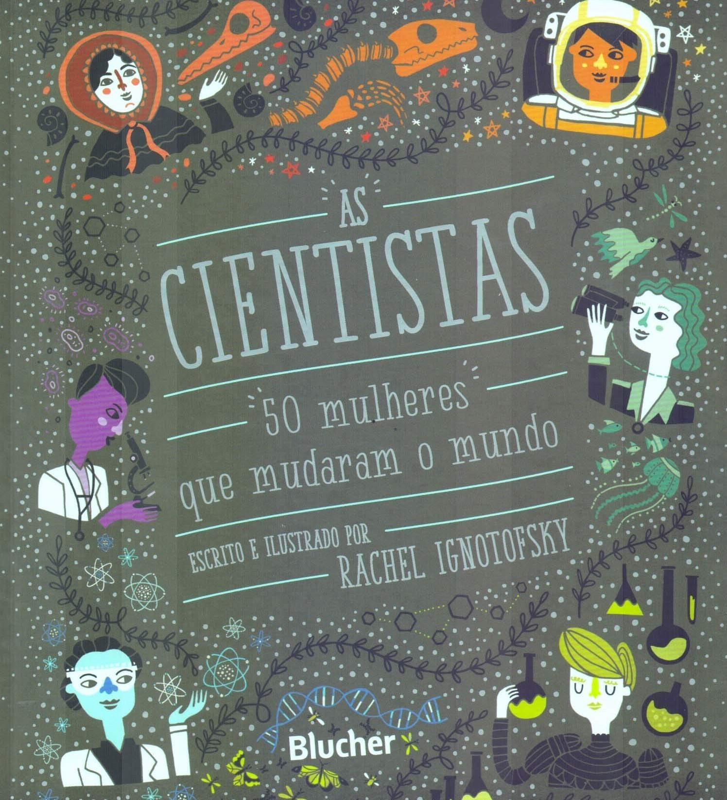
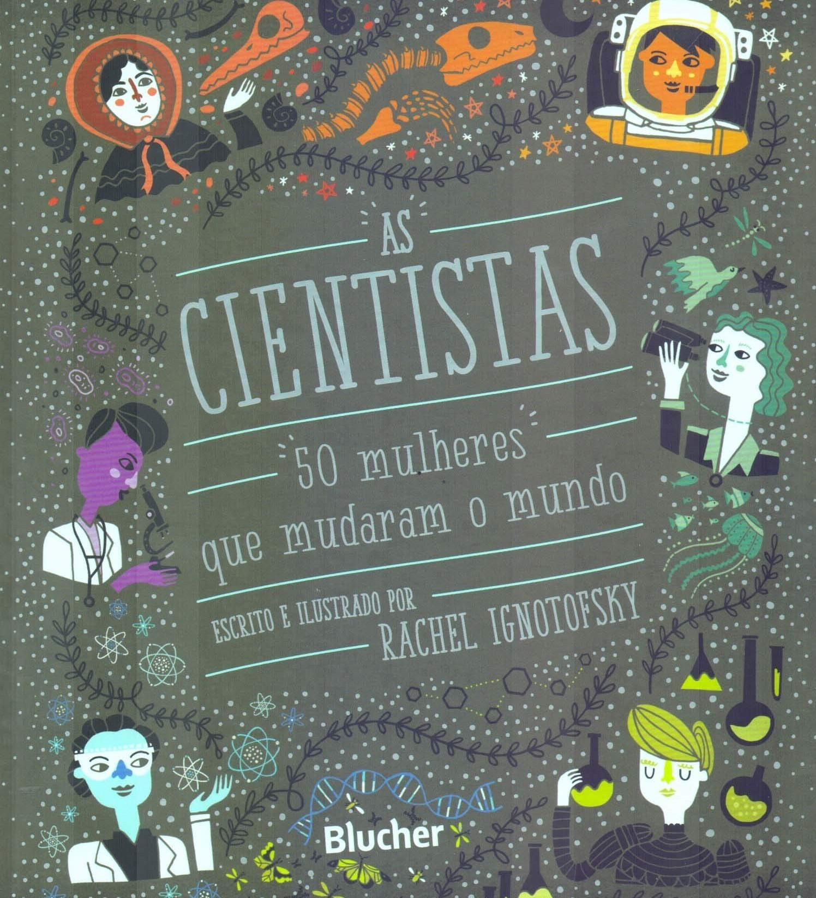

Recheado de ilustrações encantadoras, As cientistas destaca as contribuições de cinquenta mulheres notáveis para os campos da ciência, da tecnologia, da engenharia e da matemática, desde o mundo antigo até o contemporâneo, além de trazer infográficos sobre equipamentos de laboratório, taxas de mulheres que trabalham atualmente em campos da ciência e um glossário científico ilustrado. Entre as perfiladas, estão figuras bem conhecidas, como a primatologista Jane Goodall e a química Marie Curie, e outras nem tanto, como Katherine Johnson, física e matemática afro-americana que calculou a trajetória da missão Apolo 11 de 1969 à lua. As cientistas celebra as realizações das mulheres intrépidas que abriram o caminho para a próxima geração de engenheiras, biólogas, matemáticas, médicas, astronautas, físicas e muito mais!